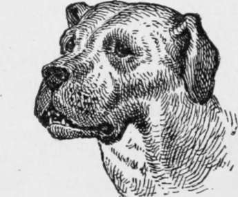

On The Training Of Fighting Dogs
Description
This section is from the book "Breeding, Training, Management, Diseases Of Dogs", by Francis Butler. Also available from Amazon: Breeding, training, management, diseases.
On The Training Of Fighting Dogs
As I am particularly requested to compound a chapter on the training of fighting-dogs, for the satisfaction of the curious, I will endeavor to present a few general ideas on the subject, for some of which, I beg to acknowledge my indebtedness to a learned professor of the art. The subject is grating to the ear of most people of refinement, by whom the practice of Dog-fighting is justly condemned as neither respectable nor moral. Simply testing the courage and endurance of particular breeds of animals, (whose valor we are anxious to prove, in order to satisfy ourselves of the intrinsic merits of the stock as guardians, hunters, &c), may perhaps be pardonable, to a certain extent, as these virtues are important ingredients in the component parts of a trustworthy companion id defender; but that an animal, whose pluck has been thoroughly verified, should be teased, torn and tortured, solely to satisfy the depraved taste of the thoughtless and desperate, few would dare to assert. However strange it may appear, the owner of a fighting-dog is perhaps as careful and tender over him, as the lady with her parlor-pet. The s'ightest insult offered to his dog would be a personal challenge to himself, and although the animal may be devoted by his guardian to battle and death, the poor confiding brute is greedy of the honor of perishing in defence of him, who sacrifices his only disinterested friend, to reap the benefit of his sufferings and the glory of his scars.
These dogs (Bulls and Bull-terriers) are decidedly the most courageous, but not naturally more quarrelsome than others; but no sooner can they run, than their latent passions are excited and their courage put to the test; they are perhaps secluded from respectable associates at the end of a four foot-chain, there to be aggravated, poked and worried by their owners and others, through whose instrumentality they are defamed, dreaded and despised.
A dog, to be in good fettle and condition for fighting, must not be allowed to carry more flesh than is necessary for his health,and that should be firm and solid. When he is matched to fight at a certain weight or under, he has generally to be reduced or increased in weight; more commonly the former. In either case, at the commencement of his training, the animal should be (what is technically termed),purged out. His stomach must be first cleansed by about two grains of Tartar emetic. On the following day, he should have small doses of castor-oil or other opening medicine, every two or three hours, until his bowels are thoroughly purified. When this is effected, the renovation, by care, regular bracing exercise and diet, begins. The food should be of the most nourishing kind, yet great care must be taken not to overload the stomach. He must be fed lightly three times a day, so that he may be enabled to stand the repeated and arduous exercises to which he must be subjected, as his endurance has to be tested by as much hard work, as he can bear. Good beef, broiled and very little blood left in it, should be his diet, with hard biscuit occasionally, or his diet may be varied if occasion require. No blood, raw meat, liver or vegetables may be given him. The quantity given him must depend on his appetite, his condition, and the amount of flesh to be worked off by exercise. He should be allowed very little water ; at the same time, fever from thirst should be carefully guarded against; therefore he may have little and often, that he may require the less. He should be kept in a sufficiently warm temperature, and not exposed to cither cold or heat. Should he be taken out in the cold air, his loins should be covered, and he must bekept moving at a brisk pace. He had better not be exercised out of doors, either in hot or cold weather, excepting early in the morning in summer. As to the ways in which he may be exercised, they are various : the harder the work in reason, the better. A stuffed bag may be suspended from the cieling, and when the dog is muzzled, he should be excited to seize it. A large ball may be rolled for him to run after, or he may run a few miles occasionally at a brisk pace, following a horse. These exercises must be persisted in as far as he can conveniently bear, which must be left to the judgment of his trainer, but the animal should never be allowed to exhaust himself too much at once, or to suffer for want of food or water. If his bowels should become too constipated, a little magnesia may be given him, perhaps an injection of soap buds, or his exercise may be increased. If he should be in anywise relaxed, his beef should be more cooked, his biscuit more baked and his exercise diminished for a season. However no powerful purgative should be given, unless in case of an absolute stoppage. While it is highly important that he should not be overfed, he must not be reduced below his strength. As a safeguard against a mistake of this kind, he should bo weighed every morning before feeding. His best fighting and most healthy weight should be ascertained, as it is safer to give one's adversary the advantage of a pound or two than to reduce one's dog below his real fighting standard. The less your dog has been accustomed to exercise, the more time should you demand previous to his fighting ; as courage without endurance is a common defect in dogs, who have not been thoroughly hardened to toil ; and many a plucky animal has turned for want of breath, when he had courage enough to face a hundred deaths. In hasty matches, dogs are often rapidly sweated down, which is very disadvantageous to them and ought to be avoided. The amount of food ought not to be much shortened too suddenly. but a little more or less every meal. After hard exercise the animal should be well rubbed and well covered.
Continue to: